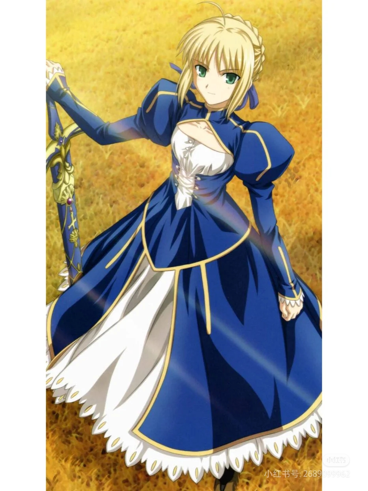
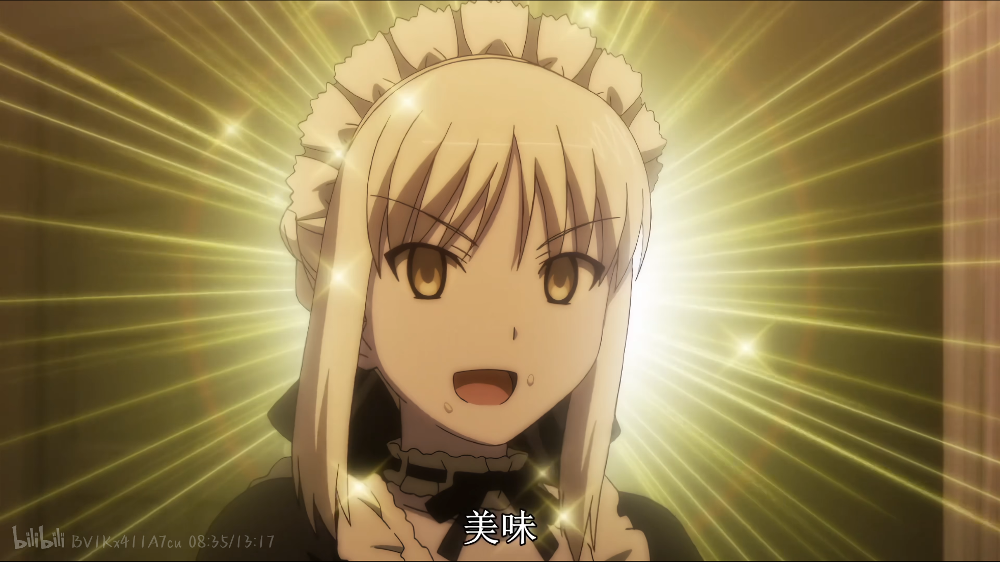
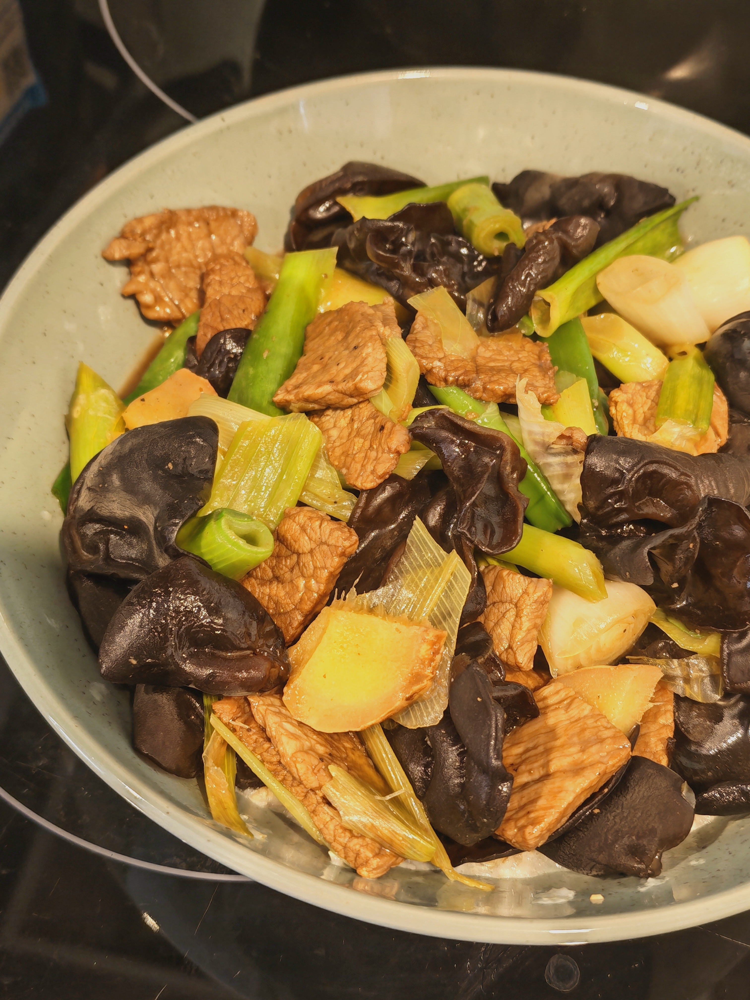
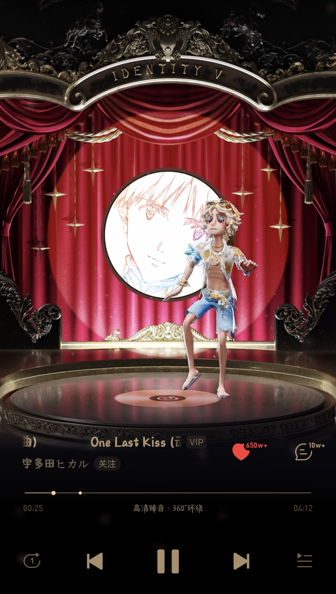
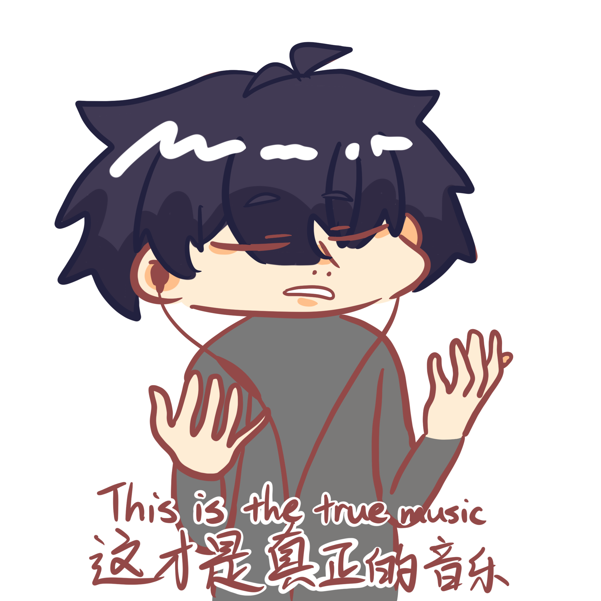
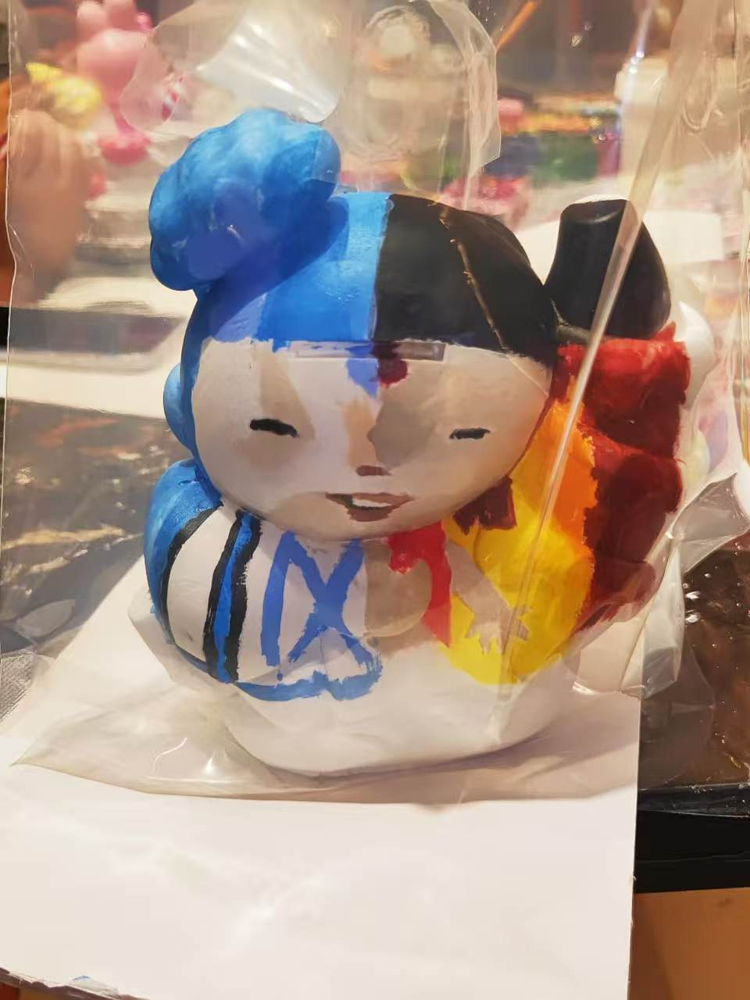
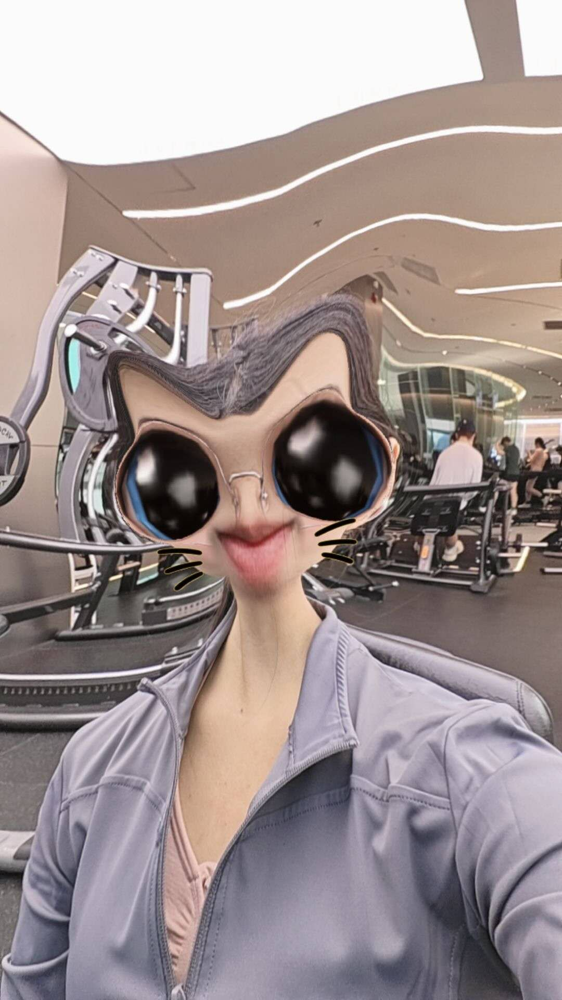

Drawing
-I started drawing since I was three years old. I didn't go to a drawing/painting classes, I studied all by myself, so I'm very proud of myself.
-I like to draw cute stuff because it's easy to draw, I like to copy paint some animation graphics, I also like to draw male naked body, I enjoy drawing the muscles, it makes me feel like I'm a master of art. (I always wanted to draw females', but I don't know how to draw it nicely, continue practicing)
-I have two OCs, one is the yellow hair boy, his name is Ling Song凌宋, and the other one is An Shao安邵, yeah they're gay couples :)


Anime
-I'm a huge anime lover, I've watched tonnes of animes, I think experiencing other people's life with them together was joyful.
-My favourite one is Evangelion, no doubt. It's like a god piece for me, I even made powerpoints, mind maps, posters and essays to analyze the worldview of this anime.
-I would highly recommand this anime to everyone.


Video Games
-I like to play video games, don't know why but I just liked it.
-My Top three key games are "Sky", "Persona 5x" and "GRAY RAVEN", and the others are like DMMD, FGO, Steins;Gate and so on.
-By the way, I have to mention that I've already play "Sky" for SIX years I reckon(plus 2026).


Cosplay
-I was a cosplayer when I'm in China, but I quit by the time I came Christchurch.
-My first character was Nagisa Kaworu from Evangelion, and then the other characters that I listed in the tags bellow.
-It really hurts my ankles and my skin, because I'm allergic to many cosmetic and it's tired wearing all of those stuff, but when I got the photographs, I'll think:"It worth it."


Favourite Character
-My favourite character is from the animation series of Fate, she's Altria Pendragon, she's a feme version of king Arthur. Don't know why I love her so much, I reckon perhaps it's because she's cute(?
-I wonder why.


Baking & Cooking
-I'm so into baking and cooking, I think I'm very good at making bagels and cookies in baking, and I promise I'm pretty good at stir-fry. I make my every three meal every day by myself. It's the process of making them were enjoyable, it makes me concentrate on doing something.
-I also love to 'play' with dough.


Music
-I like to listen to music, because it makes me calm down and relax my mental and physical tight.
-When I need some calm sentiment, I'll listen to soft music, jazz of pure music. When I'm drawing or need some exciting emotions, I often or definitely would listen to vocaloid songs mostly made by teto and miku.
-Even though, my favourite song was a ED from Evangelion "One Last Kiss" made by Hikaru Utada in 2021, every time when I listens to it, I always wanted to cry.


Fitness Workout
-I started fitness training on the October 8th, 2025. I noticed that I want a muscly fit body, so I went to workout, and I'm continue doing it right now.
-Although my training weight isn't heavy, but every time when I saw my muscly forearm, I just think how handsome am I?!
-I'm very proud of it.



